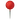
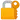

Plinko México - Jogue Plinko Online
-

Bono de bienvenida: hasta 1.950 € + 150 giros gratis
 Bono en 4 depósitos
Bono en 4 depósitos
 Licencia: Curazao eGaming
Licencia: Curazao eGaming
1xBet Casino
Juega Ahora8.9 / 10

-

Bono de bienvenida: hasta $1,000
Depósito mínimo: $10
125 giros gratis en Big Bass Hold y Spinner
Licencia: Malta Gaming Authority
Betway Casino
Juega Ahora8.6 / 10
-

Bono de bienvenida: 50% hasta ₦200,000
Bonos de casino y deportes
Licencia: Autoridade de Jogo de Portugal
Betano Casino
Juega Ahora8.8 / 10
-

Bono de bienvenida: 500% hasta $2,800
Depósito mínimo: $1
Licencia: Curazao eGaming
1win Casino
Juega Ahora9.1 / 10
Información básica sobre el juego de Plinko:
 Atributo
Atributo
|
 Detalles |
|---|---|
 Nombre del juego
Nombre del juego
|
Plinko |
| Creador original | El juego original de Plinko se presentó por primera vez en el programa "The Price is Right" (CBS, EE. UU.). |
 Año de creación
Año de creación
|
En 1983 se lanzó una versión televisiva del juego Plinko; las versiones digitales están disponibles desde mediados de la década de 2000. |
 Versión digital moderna
Versión digital moderna
|
Desarrollada por proveedores como Spribe, BGaming y otros |
 Mecánica
Mecánica
|
Juego de azar en el que una bola desciende por un tablero con clavijas hasta alcanzar un multiplicador. |
 RTP (retorno al jugador)
RTP (retorno al jugador)
|
Entre 97% y 99% dependiendo del casino y configuración |
 Niveles de riesgo
Niveles de riesgo
|
Bajo, medio y alto (influyen en la volatilidad y los premios). |
 Modo de apuesta
Modo de apuesta
|
Apuesta fija por cada lanzamiento, con opción de utilizar múltiples bolas. |
 Funciones destacadas
Funciones destacadas
|
Automático, turbo, demo gratuito, personalización de riesgo |
 Compatibilidad
Compatibilidad
|
Disponible en versión web, móvil y apps (Android / iOS) |
 Popularidad en México
Popularidad en México
|
Un juego muy popular debido a su simplicidad, dinamismo y la posibilidad de obtener rápidamente ganancias reales del verdadero juego Plinko. |
 Recomendación
Recomendación
|
Plinko es seguro solo para mayores de 18 años. Jugar con responsabilidad. |
Principales proveedores del juego Plinko
Gracias a varios desarrolladores de software, el juego de Plinko es real. Estas empresas no sólo crean versiones funcionales, sino que también mejoran el aspecto visual, garantizan la compatibilidad con dispositivos móviles, hacen que Plinko sea seguro y certifican la funcionalidad utilizando tecnologías imparciales como un generador de números aleatorios.
Uno de los desarrolladores más reconocidos es Spribe, conocido por su interfaz limpia, rendimiento fluido y enfoque transparente. Su versión destaca en México gracias a su elevado RTP, compatibilidad con móviles y diseño moderno. BGaming es otro proveedor destacado, con gráficos dinámicos y funciones que permiten ajustar tanto el nivel de riesgo como los multiplicadores de forma manual.
Las siguientes variantes están diseñadas para jugadores que prefieren una experiencia más dinámica y desafiante. Los estudios SmartSoft y Gamzix han desarrollado versiones con características adicionales como misiones, logros o jackpots progresivos.
Antes de elegir un casino, es recomendable verificar qué proveedor ofrece la versión del juego, ya que la calidad, el diseño y las funciones pueden variar considerablemente. Las mejores opciones están auditadas y licenciadas, lo cual asegura que cada caída de bola sea completamente justa y aleatoria. Considero que estos juegos son veraces y seguros.
| Proveedor | Características destacadas | Compatibilidad | Funciones especiales |
|---|---|---|---|
| Spribe | Diseño minimalista, interfaz clara y RTP competitivo | Web, Android, iOS | Modo automático, selección de riesgo, historial de jugadas |
| BGaming | Visuales animados, sonidos envolventes y alta fluidez | Web, app móvil | Control manual de la trayectoria, modos turbo y auto |
| SmartSoft | Estilo arcade, recompensas dinámicas y misiones | Navegador móvil y PC | Sistema de logros, giros gratis, tabla de clasificación |
| Gamzix | Estética de casino clásico con efectos brillantes | Compatible con todos los dispositivos | Jackpots progresivos, niveles de bonificación |
¿Juego plinko como se juega?
Plinko se ha convertido en un juego muy popular entre los jugadores de México. Su mecánica es bastante sencilla pero adictiva: una bola cae desde lo alto de un tablero lleno de clavijas, rebotando de forma impredecible hasta caer en una casilla con un multiplicador que determina el premio final.
Plinko es un juego que se diferencia de otros juegos de casino porque combina la aleatoriedad con un toque de estrategia, lo que lo convierte en una opción atractiva tanto para principiantes como para usuarios más experimentados. Plinko es un juego seguro y justo. Plinko para ganar dinero real. Y lo mejor de todo, está disponible en cualquier momento, lugar y dispositivo.

Diseño visual del Plinko game - simpleza que atrapa
Visualmente, el plinko juego es limpio, moderno y fácil de entender. El tablero suele tener un diseño vertical con múltiples filas de clavijas. Las plinko balls rebotan creando suspenso con cada movimiento.
Muchos casinos permiten elegir colores de bola, velocidad de caída y hasta número de bolas lanzadas al mismo tiempo. Esa personalización aumenta la inmersión y hace del casino plinko una experiencia más interactiva.
Juega Ahora¿Por qué es tan emocionante este juego en línea?
Este juego de casino Plinko está diseñado para ser simple y emocionante a la vez. Además, Plinko es seguro y te da la oportunidad de ganar dinero real. Te ofrecemos un algoritmo paso a paso para que tengas éxito en el juego.
-
Apuesta Plinko: Tú decides cuánto quieres apostar. Puedes empezar con pequeñas cantidades en pesos mexicanos (MXN).
-
Define el nivel de riesgo: Tú determinas tu nivel de riesgo: bajo, medio o alto, lo que afecta directamente el tipo de multiplicador que puedes obtener.
-
Lanza la bola: Puedes elegir la posición inicial de la pelota y luego presionar el botón para liberar la pelota Plinko.
-

Espera el resultado: La bola debe caer en el bolsillo multiplicador y sus ganancias se calcularán automáticamente.
-
Plinko ganar: Utilice Plinko ganar dinero
El juego Plinko ha conquistado rápidamente a muchos jugadores gracias a su simplicidad, que te permite ganar dinero real. ¡En cuestión de minutos tendrás una victoria! Puedes probarlo tanto en modo demo como con dinero real.
¿Cómo jugar a Plinko para ganar dinero real de forma segura y estratégica?
Nuestro consejo: si quieres jugar a Plinko para ganar dinero real, no empieces sin un plan. ¡Necesitas Plinko plans! Empieza poco a poco, tómate tu tiempo, aprovecha los recursos disponibles y siempre ten el control de tu juego.
-

Para tus primeros juegos usa la Plinko demo
-
Establecer un presupuesto inicial
-
Aprovecha siempre las promociones y bonificaciones de los proveedores
-
Controlar el nivel de riesgo
-
Monitorea siempre tus resultados y si es posible, cambia las estrategias de juego para obtener mejores resultados.
¿Dónde jugar en un casino en México?
Estamos seguros de que Plinko online te cautivará como nunca y te brindará emociones inolvidables. Pero recuerda: necesitas conocer las reglas clave y las estrategias de juego, pero elegir un casino seguro es aún más importante. En México, solo unos pocos casinos online ofrecen una experiencia de juego 100% confiable, honesta y transparente. ¡Haz tus primeras apuestas con inteligencia y juega solo con proveedores de juegos de confianza!
El proveedor del juego será responsable de su dinero, protegerá sus datos personales y garantizará un juego justo y sin errores. Si el casino no es confiable, podría encontrarse con pagos lentos de sus ganancias, un servicio al cliente deficiente o incluso juegos manipulados (injustos).
Elige siempre un casino confiable con buena reputación y trayectoria comprobada. ¡Tu seguridad lo vale!


¿Qué aspectos son importantes a la hora de elegir un casino online?
-
 El casino tiene licencia
El casino tiene licencia
-
Los métodos de pago deben ser confiables
-
Los juegos tienen certificados
-
Promociones y bonos sin giros
-
Hay optimización móvil.
-
Analizar las reseñas de otros jugadores
-
El servicio de atención al cliente en español está disponible.
¿Cuál es nuestra recomendación para jugar Plinko?
Hemos dedicado muchas horas a analizar otras plataformas de juego y hemos seleccionado casinos online fiables para que juegues. Cumplen todos los requisitos clave mencionados. Estas plataformas ofrecen el juego Plinko con la opción de jugar gratis (demo) o con dinero real, atención al cliente en español y atractivas promociones y bonos para nuevos clientes.
¡Así que, adelante, empieza a jugar! ¡Mucha suerte!
-
Bono de bienvenida: hasta 1.950 € + 150 giros gratis
Bono en 4 depósitos
Licencia: Curazao eGaming
1xBet Casino
Juega Ahora8.9 / 10
-
Bono de bienvenida: hasta $1,000
Depósito mínimo: $10
125 giros gratis en Big Bass Hold y Spinner
Licencia: Malta Gaming Authority
Betway Casino
Juega Ahora8.6 / 10
-
Bono de bienvenida: 50% hasta ₦200,000
Bonos de casino y deportes
Licencia: Autoridade de Jogo de Portugal
Betano Casino
Juega Ahora8.8 / 10
-
Bono de bienvenida: 500% hasta $2,800
Depósito mínimo: $1
Licencia: Curazao eGaming
1win Casino
Juega Ahora9.1 / 10
¿Cuáles son las ventajas y riesgos de apostar en línea?
Ventajas
-

El juego es totalmente responsivo. Puedes jugar en tu teléfono, tableta o PC.
-
El juego es adecuado para principiantes.
-
Puedes controlar todo tu historial de apuestas
-
RTP alto
-
Puedes jugar en modo demo o comenzar a jugar con dinero real ahora mismo.
Desventajas
-

El resultado del juego depende del azar.
-
Hay ocasiones en las que los jugadores no reciben un bono.
Hay diferentes versiones del Plinko juego
Si bien el clásico juego Plinko ya ofrece una experiencia de juego atractiva, en los últimos años han surgido versiones actualizadas que lo hacen aún más visualmente impactante, versátil y adaptable a diferentes estilos de juego. Estas nuevas ediciones incluyen tecnología moderna, opciones de personalización e incluso modos competitivos.
Al probar estas opciones, podrás encontrar la que mejor se adapte a tu estilo de juego, presupuesto y expectativas. A continuación, te presentamos las versiones más populares del juego online Plinko disponibles actualmente en los principales casinos.
Plinko X: la evolución de un clásico
Plinko X ha demostrado ser una de las versiones favoritas de los jugadores en México. Este juego conserva la esencia del formato tradicional, pero añade notables mejoras técnicas y gráficas.
-
Sonido envolvente fresco y entorno 3D que brinda una animación fluida.
-
Lanza varias bolas simultáneamente en diferentes modos (turbo y automático)
-
Diferentes tableros con diferentes números de líneas y clavijas.
-
Capacidad de ajustar la velocidad, los rebotes y mostrar coeficientes.
La versión de Plinko X es perfecta para quienes buscan una experiencia más moderna sin perder la jugabilidad original. El RTP y el riesgo son similares, pero algunos casinos en línea ajustan los pagos según su propia configuración.
Plinko XY app: una experiencia para jugadores más exigentes
Diseñado para quienes disfrutan de la interactividad, Plinko XY lleva el juego a un nuevo nivel. Esta versión combina elementos de progresión, misiones y competiciones.
-
Mostrar logros, niveles y recompensas.
-
Completar tareas diarias te dará la oportunidad de recibir premios o apoyo para series.
-
Clasificaciones y torneos semanales
-
Puede definir plantillas y personalizar reglas.
Muchos jugadores experimentados eligen Plinko XY porque convierte el juego Plinko en una aventura interesante y emocionante, en la que no solo hay aleatoriedad, sino también lugar para la estrategia.
Bonos de Plinko
Inmediatamente después de registrarte, podrás acceder a un bono de bienvenida para jugar en Plinko. Es importante leer primero los términos y condiciones del casino, ya que, en algunos casos, los bonos gratuitos solo están disponibles para ciertas tragamonedas.
También están disponibles otros tipos de bonificaciones:
-
bonos sin depósito;
-
bonos por realizar un depósito;
-
códigos promocionales;
-
giros gratis por tu cumpleaños;
-
recompensas por avanzar de nivel en el programa VIP.
Recomendaciones para aprovechar al máximo los bonos
-
Verifique constantemente los términos y condiciones del bono
- No utilices bonificaciones en juegos con discapacidades
-
Aprovecha los bonos como parte de tu estrategia
-
Activa los bonos al empezar a jugar
Una gestión eficaz de los bonos puede marcar la diferencia entre una partida rápida y una sesión llena de oportunidades. Con la estrategia adecuada y el casino perfecto, los bonos pueden ser una ventaja clave en el mundo del dinero real de Plinko.
Plinko Free: modo demo sin ningún riesgo
¿Aún no estás listo y te da miedo apostar dinero real? Prueba Plinko gratis en modo demo y juega sin arriesgar tu bolsillo.
-
Juega al instante, es decir, sin registro ni depósito
-
Perfecto para adquirir habilidades y mejorar tu estrategia.
-
Las mismas características y funciones que en la versión con dinero real.
¿Listo para el siguiente paso? ¡Empieza con la demo!
Jogar demoEstrategias de juego para obtener mejores resultados de jugador
-
Datos básicos para principiantes
-
Controla siempre tu presupuesto.
-
Empieza el juego con apuestas pequeñas.
-
Para adquirir habilidades, juega primero el juego de demostración.
-
-
Técnicas para expertos en el juego
-
Analiza tus resultados y considera los pasos a seguir para mejorar tu estrategia.
-
Gestiona tus apuestas con objetivos claros.
-
Combinar diferentes niveles de riesgo..
-
Juega Plinko en tu móvil
Más del 80% de los jugadores en línea en México eligen sus teléfonos para acceder a cualquier juego. Plinko no es la excepción. Los desarrolladores se han esforzado para que Plinko sea simple y 100% responsivo, lo que lo hace ideal para jugar desde cualquier dispositivo móvil en cualquier momento que te convenga.
Aunque uses Android o iOS, puedes acceder a Plinko online sin interrupciones. Los proveedores de casinos verificados ya han adaptado sus sitios web para ofrecerte la posibilidad de elegir el dispositivo que mejor se adapte a tus necesidades.
Beneficios de jugar Plinko desde tu dispositivo móvil
-
Acceso rápido desde cualquier lugar
-
Interfaz táctil optimizada y adaptada
-
Acceso continuo
-
 Mismo acceso a promociones y bonificaciones
Mismo acceso a promociones y bonificaciones
-  Máxima seguridad y privacidad en cada sesión

¿Aplicación o navegador? Ambas opciones funcionan y son fiables.
Muchos casinos en línea ofrecen una aplicación móvil, pero también puedes usar un navegador móvil (como Chrome o Safari). Ambas opciones tienen ventajas:
-
App: Mayor velocidad, notificaciones automáticas, mejor integración con el sistema operativo.
-
Navegador: No es necesario instalarlo en su propio dispositivo, ideal para dispositivos con espacio de memoria limitado.
¿Cómo funciona Plinko Casino en dispositivos móviles?
| Plataforma | Compatibilidad | Experiencia de juego |
|---|---|---|
| Android | Teléfonos y tablets con Android 7.0 o superior | Muy fluida, ideal para jugar plinko online |
| iOS | iPhone/iPad con iOS 13 o superior | Excelente rendimiento, soporte completo para plinko juego |
| Navegador móvil | Cualquier dispositivo con conexión | Acceso rápido sin descargar apps |
Ventajas y desventajas de jugar online desde el navegador
-
No es necesario descargar nada ni ocupar espacio en tu dispositivo.
Funciona con cualquier sistema operativo.
-
Puede utilizar más datos móviles.
Es posible que las animaciones no se carguen tan fluidamente como en las aplicaciones.
Seguridad, privacidad y soporte al jugador Plinko
Los principiantes suelen preguntarse si el juego Plinko es realmente seguro. ¡La respuesta es sí! Si juegas en un casino con licencia oficial y buena reputación, el juego es confiable y seguro. Estos sitios operan bajo estrictos controles, auditorías y sistemas de protección que garantizan un entorno de juego seguro.
Además, el juego Plinko funciona con tecnología de generador de números aleatorios, lo que garantiza la total imprevisibilidad de cada giro de la bola y la ausencia de fraude.
Seguridad técnica y de datos personales
-

Protección de cuenta: Autenticación en dos pasos y uso de métodos biométricos (huella dactilar o Face ID).
-
Encriptación SSL de 256 bits: Los datos que utiliza (contraseñas, información bancaria o documentos) están encriptados y protegidos contra accesos no autorizados.
-
Auditorías externas: Auditoría continua de laboratorios independientes como eCOGRA y iTech Labs.
Confidencialidad
Laboratorios independientes como eCOGRA e iTech Labs auditan constantemente el juego para garantizar que siga siendo justo y confiable.
Antes de registrarte en un sitio donde se ofrezca el plinko online, asegúrate de leer su aviso de privacidad y términos legales. Si el casino es serio, toda esta información estará fácilmente accesible.
Juega ahoraPreguntas frecuentes sobre el juego Plinko
-
¿Puedo jugar Plinko sin registrarme en un casino?
Por supuesto, puede ser un modo demo sin necesidad de crear una cuenta. Esta opción gratuita es perfecta para desarrollar habilidades y desarrollar una estrategia. Pero, si quieres ganar dinero real, usa la aplicación.
-
¿Cuánto dinero necesito para empezar a jugar Plinko?
Puedes empezar con apuestas mínimas de $10 o $20 MXN. Puedes ajustar la apuesta en cada ronda según tu presupuesto y estrategia de juego.
-
¿Cuál es la diferencia entre riesgo alto, medio y bajo en Plinko?
El nivel de riesgo que elijas afecta directamente los multiplicadores disponibles y tus ganancias. Con un riesgo bajo, las ganancias son más frecuentes, pero menores. Por otro lado, con un riesgo alto, puedes ganar mucho más, pero con menos probabilidades.
-
¿Plinko es un juego limpio o está amañado?
Plinko es un juego completamente justo, ya que utiliza un Generador de Números Aleatorios (RNG) certificado, que garantiza el 100 % de aleatoriedad en cada resultado. Si juegas en casinos verificados y con licencia, puedes estar seguro de que el juego no está amañado.
-
¿Puedo usar criptomonedas para jugar Plinko?
Sí, varios casinos modernos ya aceptan criptomonedas como método de pago para jugar a Plinko. Asegúrate de que el casino acepte criptomonedas y sea seguro.
-
¿Se puede ganar dinero real jugando Plinko o es solo entretenimiento?
Tienes la oportunidad de ganar dinero real en la aplicación. Si usas la versión demo, no ganarás. Así que piensa bien para qué viniste.